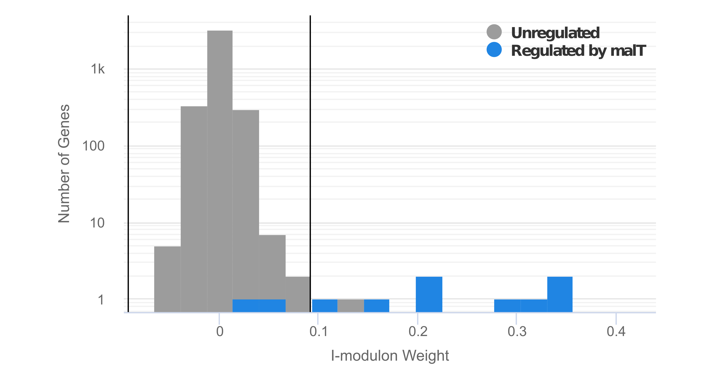
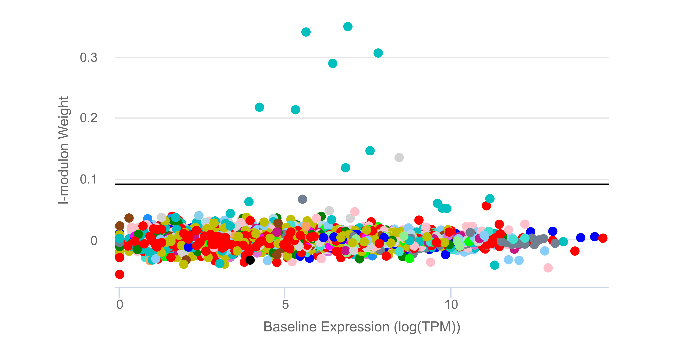
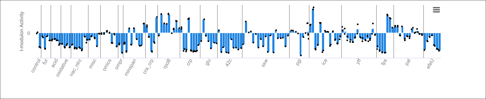
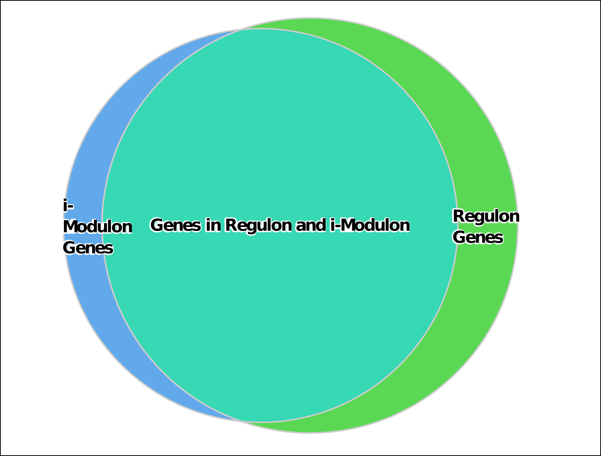
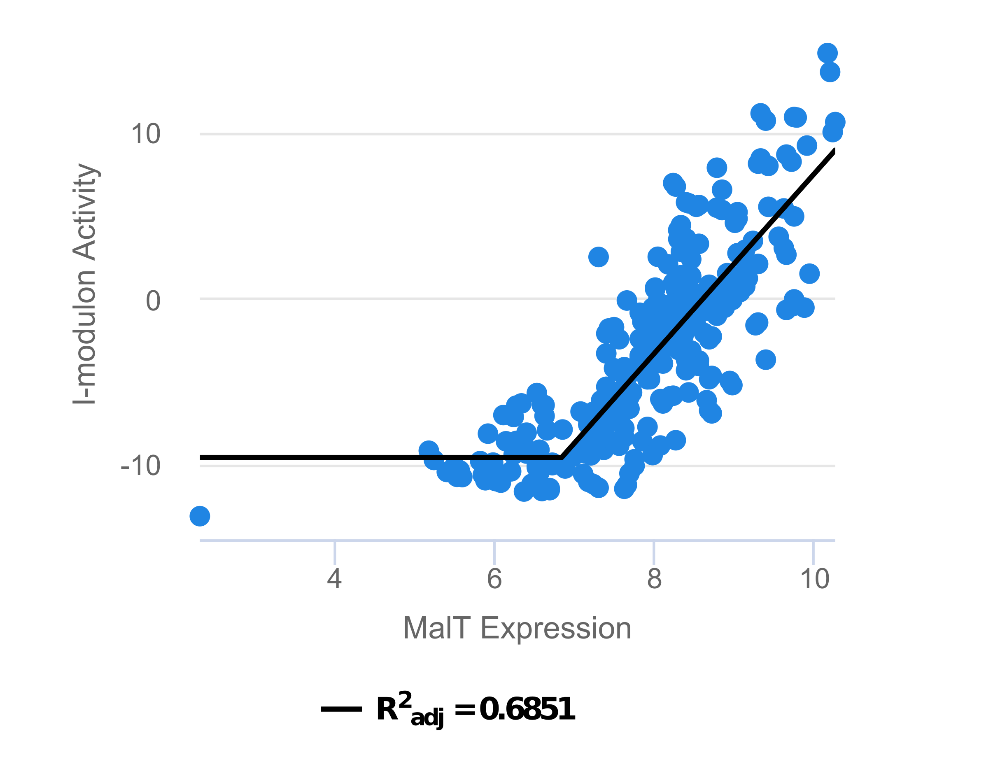

About Modulytics
The Modulytics website provides interactive visualizations of “iModulons” (independently modulated gene sets) that describe an organism’s transcriptional regulatory network (TRN).
Currently, Modulytics solely focuses on the iModulons from the pioneering paper on Escherichia coli (read more here). In the future, Modulytics will expand its scope to other organisms – stay tuned!
For a description of each of the figures shown on the iModulon dashboards mouse over the various components of the example “MalT” iModulon below:

Genes


Activity

Regulation

